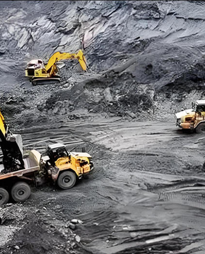

Марка и спецификация
Укажите состав, марку или концентрацию, роль реагента, характеристики руды или воды и ключевые показатели.
Горнопромышленный реагент · Железосодержащий коагулянт
Хлорид железа(III) — железосодержащий коагулянт для оценки в процессах осветления шахтной воды, удаления металлов или фосфора и обработки осадка.
Укажите состав и марку реагента, роль в процессе, характеристики руды или воды, количество, место назначения и необходимые документы.

Кратко о продукте
Хлорид железа(III) — железосодержащий коагулянт для оценки в процессах осветления шахтной воды, удаления металлов или фосфора и обработки осадка.
Пригодность зависит от марки реагента, минералогии и раскрытия минералов, химии пульпы и оборотной воды, взаимодействия реагентов, оборудования и управления процессом. Для применения нужны испытания и инженерная оценка конкретной технологической схемы.
Руководство для закупщика
Сравнивайте предложения по конкретной марке, спецификации, документам и условиям поставки.
Укажите состав, марку или концентрацию, роль реагента, характеристики руды или воды и ключевые показатели.
Для предложения укажите количество, упаковку, место назначения, Incoterms и требуемую дату поставки.
Опишите технологическую схему, действующие реагенты и критерии лабораторных и опытно-промышленных испытаний.
Запросите спецификацию, методы испытаний, COA, SDS и сведения о прослеживаемости выбранной марки.
Оценка применения
Область применения и пригодность определяют по конкретной руде, воде, технологической схеме и результатам испытаний.
Задайте состав исходной воды и требуемый результат осветления; проведите лабораторные и опытно-промышленные испытания.
Оцените реагент на воде хвостового хозяйства с учётом её возврата в технологический процесс.
Укажите роль реагента в обработке осадка или регулировании pH и критерии испытаний.
Согласуйте показатели воды на выходе и совместимость выбранной марки с последующими стадиями.
Выбор марки
Предоставьте анализ поступающей воды и целевые показатели очистки.
Используйте пробы коагуляции или другие подходящие лабораторные испытания; оцените влияние на последующие стадии.
Согласуйте применимые пределы остаточных металлов, мономеров и растворённых веществ и методы их контроля.
Учитывайте свойства осадка, условия разрешения на сброс и водный баланс предприятия.
Техническая документация по запросу
Запросите актуальную спецификацию выбранной марки, технический лист (TDS), методы испытаний и критерии приёмки. Результаты конкретной партии оценивают по её сертификату анализа (COA).
Запросите спецификацию или TDS, паспорт безопасности (SDS), аналитические методы, образец COA и сертификат анализа конкретной партии.
Согласуйте классификацию опасности и перевозки, совместимую упаковку, раздельное хранение, срок хранения и аварийные меры.
Обзор EPA: добыча твёрдых полезных ископаемых, EPA: добыча и обогащение руд, USGS: переработка минерального сырья и NIH PubChem.
Условия технологического применения: Идентичность сырья не определяет извлечение, селективность или дозировку. Для выбранной руды и воды необходимы лабораторные и опытно-промышленные испытания, инженерная оценка, разрешения предприятия и контроль отходов, стоков, выбросов и условий труда.
Хранение и обращение
Вопросы покупателей горнодобывающей промышленности
Хлорид железа(III) — железосодержащий коагулянт для оценки в процессах осветления шахтной воды, удаления металлов или фосфора и обработки осадка.
CAS 7705-08-0 безводный; раствор или гидрат отличается; Укажите безводную форму, гидрат или раствор. Укажите состав, марку, концентрацию, физическую форму и ключевые пределы примесей.
Запросите в отделе продаж спецификацию или TDS, методы испытаний и образец COA для выбранной марки.
Реагент, дозировку, порядок подготовки пульпы и контрольные пределы определяют по минералогическим, металлургическим или водоочистным испытаниям и инженерной оценке предприятия.
Укажите идентичность, марку или концентрацию, роль в процессе, характеристики руды или воды, ключевые показатели, количество, упаковку, место назначения, документы, Incoterms и требуемую дату поставки.
Связанные материалы
Реагенты для водоочистки, выщелачивания, флотации, плавки и рафинирования.
Обсудите актуальную спецификацию, документы, образцы и коммерческие требования.
Снабжение и экспортная поддержка международных закупок химического сырья.
Предложение для горнодобывающей промышленности
Укажите состав, марку или концентрацию, роль реагента, характеристики руды или воды, ключевые показатели, количество, упаковку, место назначения и документы.